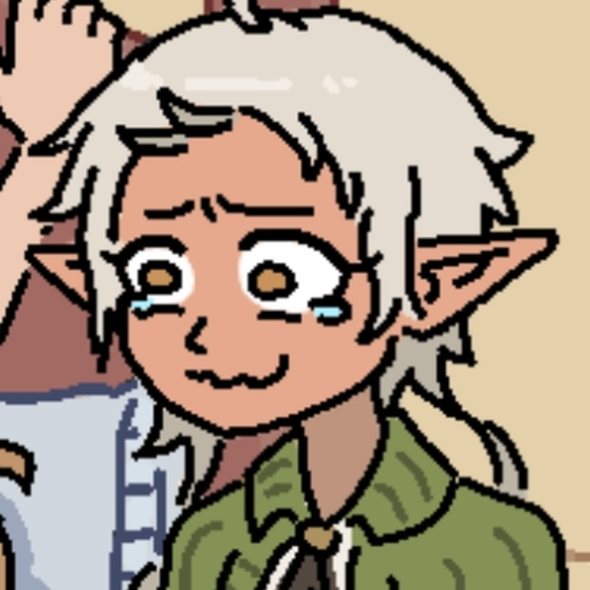

OkiToki
/ uptime
Checking status…
Kepsylon-8 uptime
Live status for the OkiToki bot and the server it watches over — tracked in five-minute heartbeats since —.
Last 7 days
—
Weekly uptime
Last 30 days
—
Monthly uptime
Last 365 days
—
Yearly uptime
Uptime trend
last 30 days
World map
last 90 days · one chunk per day
100%
≥95%
≥80%
<80%
down
no data
Downtime log
most recent first
- No downtime recorded yet — that's a good sign!